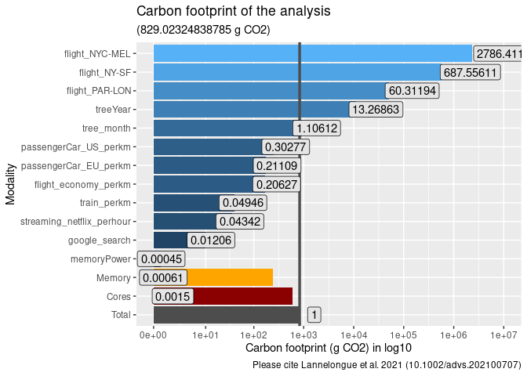

This package computes ecological footprint in R (based on green-algorithms, Lannelongue, Grealey, and Inouye (2021)). The aim is to facilitate the programmatic used of green-algorithms using the function ga_footprint(). Moreover, greenAlgoR made it simple to compute ecological footprint of {targets} pipelines using function ga_targets().
It is a beta-version. Please submit issues if you found problems or if you want to contribute.
Installation
greenAlgoR is not available on CRAN for the moment. You can install the stable development version from GitHub with:
if (!require("devtools", quietly = TRUE)) {
install.packages("devtools")
}
devtools::install_github("adrientaudiere/greenAlgoR")Scientific foundation
The algorithm from Lannelongue, Grealey, and Inouye (2021)
You can refer to green-algorithms and Lannelongue, Grealey, and Inouye (2021) to understand the algorithm. Here is the short description from green-algorithms
The carbon footprint is calculated by estimating the energy draw of the algorithm and the carbon intensity of producing this energy at a given location:
carbon footprint = energy needed * carbon intensityWhere the energy needed is:
runtime * (power draw for cores * usage + power draw for memory) * PUE * PSFThe power draw for the computing cores depends on the model and number of cores, while the memory power draw only depends on the size of memory available. The usage factor corrects for the real core usage (default is 1, i.e. full usage). The PUE (Power Usage Effectiveness) measures how much extra energy is needed to operate the data centre (cooling, lighting etc.).
The PSF (Pragmatic Scaling Factor) is used to take into account multiple identical runs (e.g. for testing or optimisation). The Carbon Intensity depends on the location and the technologies used to produce electricity.
Basic use
devtools::load_all()
library("greenAlgoR")In classical workflow
Using explicit input
# Your model must match exactly a name in TDP_cpu_internal$model
fp_12h <- ga_footprint(runtime_h = 12, cpu_model = "Core i3-10300")
fp_12h$carbon_footprint_total_gCO2
#> [1] 829.0232
fp_12h$energy_needed_kWh
#> [1] 1.745312
ggplot(fp_12h$ref_value, aes(
y = variable,
x = as.numeric(value),
fill = log10(prop_footprint)
)) +
geom_col() +
geom_col(
data = data.frame(
variable = "Total",
value = fp_12h$carbon_footprint_total_gCO2
),
fill = "grey30"
) +
geom_col(
data = data.frame(
variable = "Cores",
value = fp_12h$carbon_footprint_cores
),
fill = "darkred"
) +
geom_col(
data = data.frame(
variable = "Memory",
value = fp_12h$carbon_footprint_memory
),
fill = "orange"
) +
scale_x_continuous(
trans = "log1p",
breaks = c(0, 10^c(1:max(log1p(as.numeric(fp_12h$ref_value$value)))))
) +
geom_vline(
xintercept = fp_12h$carbon_footprint_total_gCO2,
col = "grey30",
lwd = 1.2
) +
geom_label(
aes(label = round_conditionaly(prop_footprint)),
fill = "grey90",
position = position_stack(vjust = 1.1)
) +
labs(
title = "Carbon footprint of the analysis",
subtitle = paste0("(", fp_12h$carbon_footprint_total_gCO2, " g CO2", ")"),
caption = "Please cite Lannelongue et al. 2021 (10.1002/advs.202100707)"
) +
xlab("Carbon footprint (g CO2) in log10") +
ylab("Modality") +
theme(legend.position = "none")
Based on the R session
fp_session <- ga_footprint(runtime_h = "session", add_storage_estimation = TRUE)
fp_session$carbon_footprint_total_gCO2
#> user.self
#> 0.02016005
fp_session$energy_needed_kWh
#> user.self
#> 4.244221e-05